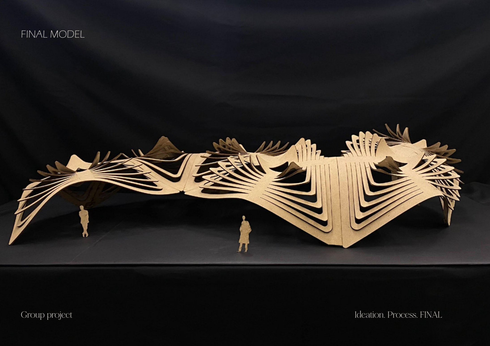
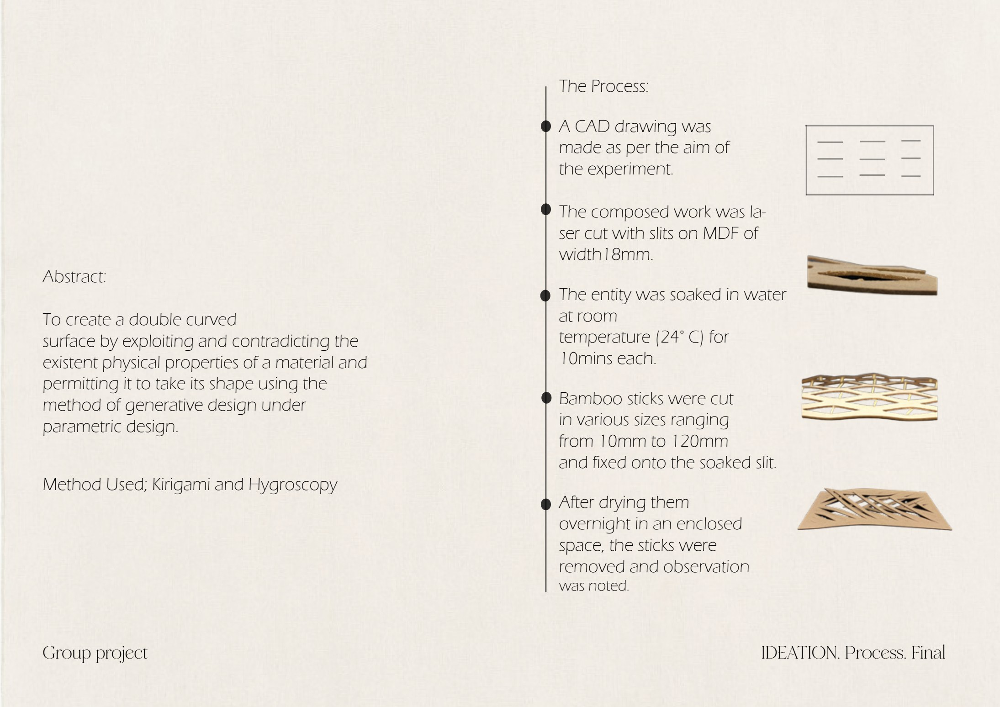
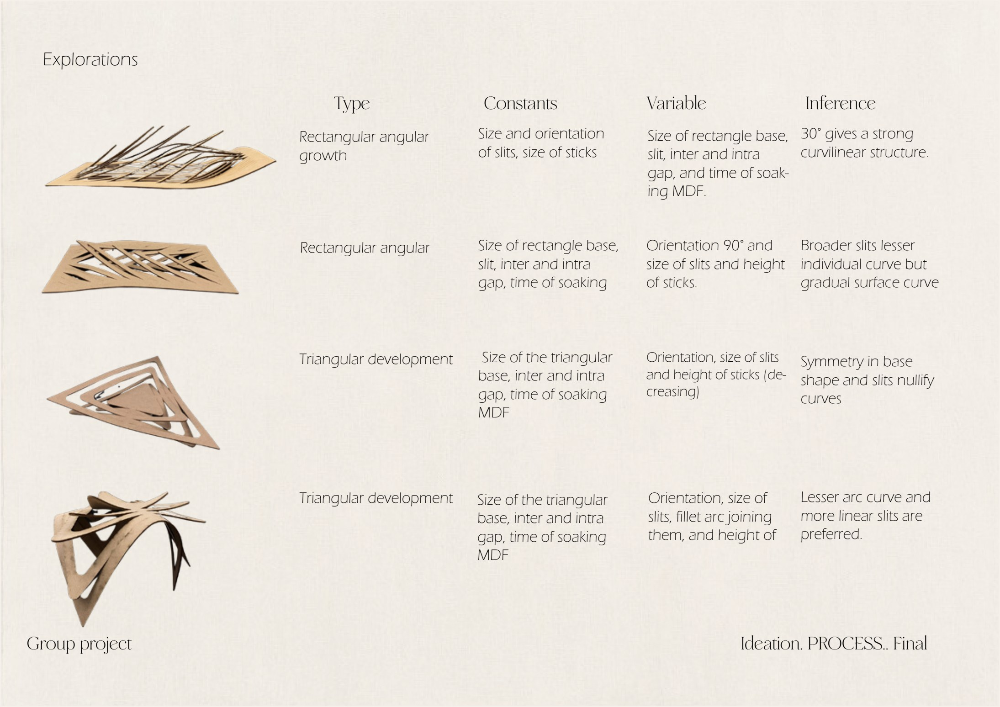
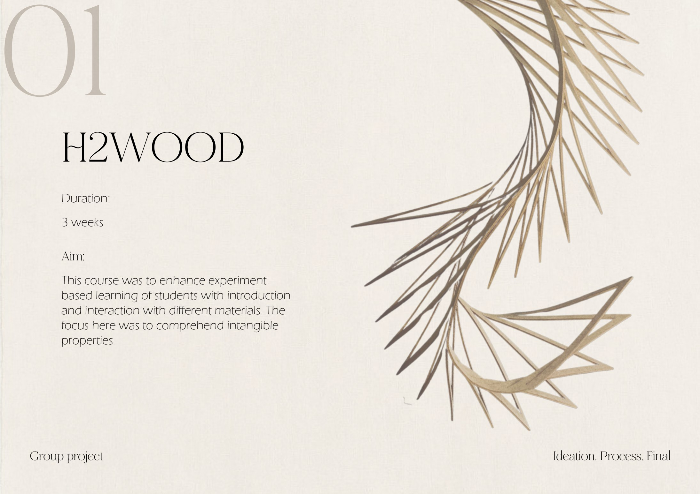

01
Parametric Design · Material Exploration
H2wood
Abstract
To create a double-curved surface by exploiting and contradicting the existing physical properties of a material — allowing it to take shape through generative, parametric design. The focus was to comprehend intangible material properties.
Aim
Learning through material
This studio enhanced experiment-based learning through direct interaction with materials. By introducing and testing the behaviour of MDF under moisture and cut geometry, the project sought to understand how intangible properties — flexibility, tension and absorption — can be directed to generate form.
Process & Methodology
From CAD to cured form
- A CAD drawing was developed according to the aim of the experiment.
- The composition was laser-cut as slits on 18 mm MDF sheets.
- The MDF entity was soaked in water at room temperature (24 °C) for 10 minutes each.
- Bamboo sticks cut to varying sizes (10–120 mm) were fixed into the soaked slits.
- The piece dried overnight in an enclosed space.
- Sticks were removed and the resulting double-curved form was observed and noted.
Explorations & Inferences
Reading the curvature
Rectangular angular growth
ConstantsSize & orientation of slits, stick size.
VariablesRectangle base, slit spacing (inter/intra gap), soaking time.
Inference≈ 30° orientation gives a strong curvilinear structure.
Rectangular — broad slits
VariablesBase size, slit size, stick height, soak time.
Inference90° orientation & broader slits yield less individual curve but a gradual surface curve.
Triangular development
VariablesBase size, gap sizes, soak time, orientation, slit & stick height.
InferenceSymmetry in base shape and slits nullifies curves.
Triangular — filleted
VariablesBase size, slit size, fillet arc joining them, stick height.
InferenceLesser arc curve and more linear slits are preferred.
From the studio
Process & Final Model




Next Project
View project →